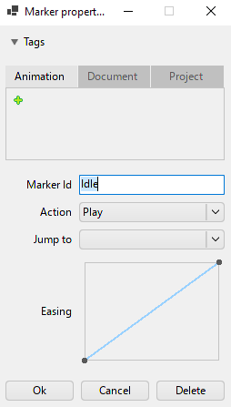
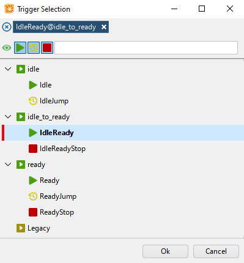

Markers and triggers
This topic describes core features of Citrus animation system.
Markers

During animating process you may want to tag specific frames of your animation to play it from that position, to stop it or to make a looped animation. For that purpose Citrus provides you markers. You can set a marker at specific frame and choose its action type between:
- Play -- marker which indicates a start of the animation;
- Jump -- marker which allows you to jump to another frame of your animation using some marker;
- Stop -- marker which stops an animation when the animation reaches its frame.
Animation stores a marker when you add a new one using Tangerine timeline.
Triggers

Triggers allow you to start running a nested animation or multiple animations of the currently animated node / container. Also using triggers you can control the animation which is already playing or stop it with Stop-marker. Trigger stores a list of marker and their animation names.
Note
One trigger can store only one marker per animation to keep the execution invariant.
When you add a new trigger it sets a "trigger"-keyframe. It is executed once the playing animation reaches it.
Important
Triggers works only in preview mode in Tangerine and in game. Timeline does not execute triggers. This happens for performance reasons.